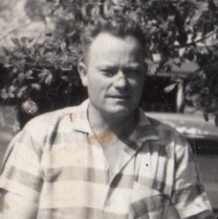
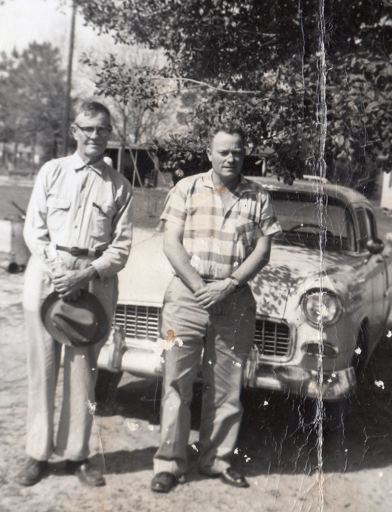
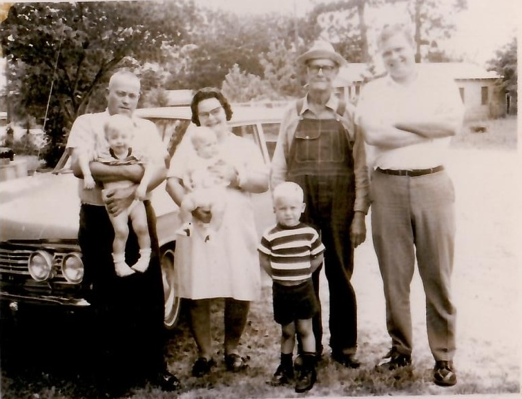
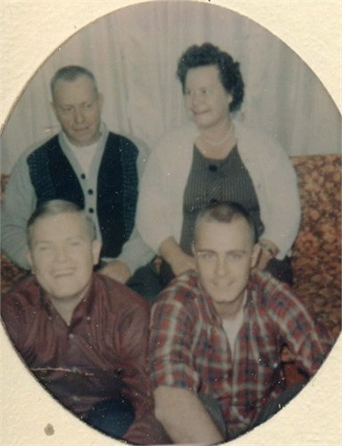
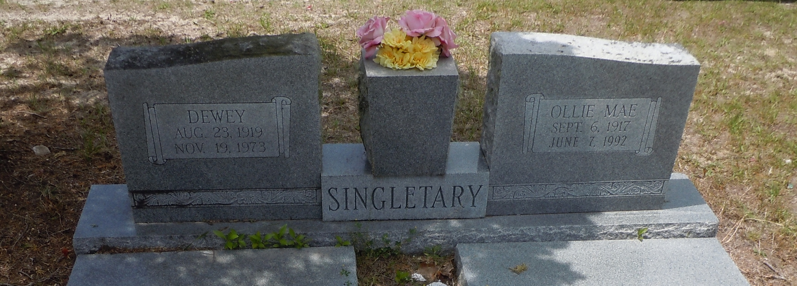

Dewey Singletary
1919–1973

Life Events
Born: August 23, 1919 — Mayo, Lafayette, Florida, United States
Died: November 19, 1973 — Perry, Taylor, Florida, United States
Family
Father: George William Singletary
Mother: Lela Mae Mathis
Spouse:
Children
Military Service
No military service information has been added.
Biography
Dewey Singletary was born on August 23, 1919, in Lafayette County, Florida, the son of George William Singletary and Lela Mae Mathis Singletary. He grew up in rural North Florida, where his family lived in the Mayo area of Lafayette County.
Dewey appears in the 1920 United States Census as an infant living with his parents and other family members in Lafayette County. By the 1930 census, he was ten years old and living with his parents and younger siblings.
Dewey married Ollie Mae Herrin, the daughter of William Levi Herrin and Laura Etta Palmer Herrin. Together, they raised a family that included their sons Arthur Singletary Sr. and Emory Dewey Singletary. Their son James Loyd Singletary was stillborn in 1955.
On October 16, 1940, at the age of 21, Dewey registered for the World War II draft in Lafayette County. His registration card identified Ollie Mae as his wife and listed his employer as a Works Progress Administration (WPA) project in Tallahassee, Florida. Although Dewey registered for the draft, no records confirming military service during World War II have been identified.
Dewey was a skilled mechanic who operated his own repair shop. According to family recollections, he was exceptionally good at his trade, but operating the business presented financial difficulties because some customers failed to pay for the work he performed. He eventually closed his shop and went to work for the Florida State Road Department, where he continued working as a mechanic.
Dewey and Ollie later made their home in Perry, Taylor County, Florida. Family photographs preserve memories of their life together, including gatherings with their sons and members of the extended Singletary and Herrin families.
Dewey died on November 19, 1973, at Doctors Memorial Hospital in Perry, Florida, at the age of 54. His death certificate identifies the cause of death as an acute myocardial infarction resulting from arteriosclerotic cardiovascular disease.
He was buried on November 21, 1973, at Woodlawn Cemetery in Perry. His wife, Ollie Mae, died on June 7, 1992, and is buried alongside him.
Dewey's life reflects the experiences of a North Florida family during the Great Depression and the decades that followed. His work as a mechanic, his years of employment with the State Road Department, and the family he raised with Ollie remain important parts of his story.
Photos



Grave & Burial

Woodlawn Cemetery, Perry, Taylor County, Florida
Sources
-
1920 United States Census - George W. Singletary Household
Type: CensusThe 1920 United States Census records George W. Singletary and his wife, Lela M. Singletary, living in Precinct No. 2, Mayo, Lafayette County, Florida. Their five-month-old son, Dewey, appears as "Duie" in the census. George's younger sisters Alice Geneva and Viola Singletary were also living in the household. The census page was enumerated on January 28 and 29, 1920.
Location: Precinct No. 2, Mayo, Lafayette County, Florida, United States
Household Members:
- Gorg W. Singletary - Head
- Lela M. Singletary - Wife
- Duie Singletary - Son - age 5/12
- Allice Singletary - Sister
- Viola Singletary - Sister
Supports: George William Singletary living in Lafayette County, Florida, in 1920, Lela Mae Mathis living as George William Singletary's wife, Dewey Singletary living as their five-month-old son, Alice Geneva Singletary living in George William Singletary's household as his sister, Viola Singletary living in George William Singletary's household as his sister
-
1930 United States Census - George W. Singletary Household
Type: CensusThe 1930 United States Census records George W. Singletary and his wife, Lela M. Singletary, living in Election Precinct No. 3, Lafayette County, Florida, with their children Dewey, Lewie, Loyd M., Irena, and George W. Lela's brother Glover Mathis appears in a nearby Mathis household on the same census page.
Location: Election Precinct No. 3, Lafayette County, Florida, United States
Household Members:
- George W. Singletary - Head - age 34
- Lela M. Singletary - Wife - age 27
- Dewey Singletary - Son - age 10
- Lewie Singletary - Daughter - age 8
- Loyd M. Singletary - Son - age 6
- Irena Singletary - Daughter - age 4
- George W. Singletary - Son - age 2
Supports: George William Singletary living in Lafayette County, Florida, in 1930, Lela Mae Mathis living as George William Singletary's wife in 1930, Lela Mae Mathis recorded as age 27 in 1930, Dewey Singletary living as a son in the household, George and Lela Singletary living with five children in 1930, Lela Mae Mathis's brother Glover Mathis living nearby
-
Marriage of Dewey Singletary and Ollie Mae Herrin
Type: Marriage RecordMarriage application, license, and certificate documenting the marriage of Dewey Singletary and Ollie Mae Herrin in Mayo, Lafayette County, Florida, on June 21, 1940. The records spell Ollie's maiden name as Herring. The application records both as age 21 and previously unmarried. Dewey was living in Mayo, was born in Lafayette County, and was working as a laborer. Ollie was living in Mayo and reported her birthplace as Homerville, Georgia.
Location: Mayo, Lafayette County, Florida, United States
Supports: Marriage of Dewey Singletary and Ollie Mae Herrin, Marriage date of June 21, 1940, Marriage place of Mayo, Lafayette County, Florida, Dewey Singletary's residence and occupation, Ollie Mae Herrin's residence, Ollie Mae Herrin's reported birthplace of Homerville, Georgia
-
Dewey Singletary — World War II Draft Registration Card
Type: Military Draft RegistrationDewey Singletary registered for the World War II draft on October 16, 1940, at age 21. He reported that he was born on August 23, 1919, in Lafayette County, Florida, and resided in Mayo. His wife, Mrs. Ollie Mae Singletary, was listed as the person who would always know his address. Dewey reported employment with a W.P.A. project in Tallahassee, Leon County, Florida. The registrar described him as approximately 5 feet 8 inches tall, weighing 145 pounds, with blue eyes, blond hair, and a light complexion.
Location: Mayo, Lafayette County, Florida, United States
Supports: Dewey Singletary's birth date of August 23, 1919, Dewey Singletary's birthplace in Lafayette County, Florida, Dewey Singletary's residence in Mayo, Florida, in October 1940, Dewey Singletary's marriage to Ollie Mae Singletary by October 1940, Dewey Singletary's employment with a W.P.A. project in Tallahassee, Dewey Singletary's physical description in 1940
-
1945 Florida State Census — Dewey and Ollie Singletary Family
Type: State CensusThe 1945 Florida State Census records Dewey and Ollie Singletary living in Precinct No. 3, Airline, Lafayette County, Florida, with their four-year-old son Arthur. Dewey was working as a laborer and Ollie was recorded as a housewife. Other members of Dewey Singletary's family, including his parents and siblings, were also living in the Airline community and appear on the same census page.
Location: Airline, Lafayette County, Florida, United States
Household Members:
- Dewey Singletary — age 25, born Florida, laborer
- Ollie Singletary — age 26, born Georgia, housewife
- Arthur Singletary — age 4, born Florida
Supports: Residence of Dewey and Ollie Singletary in Airline, Lafayette County, Florida in 1945, Arthur Singletary as a member of the household, Dewey Singletary's occupation as a laborer, Ollie Singletary's birthplace as Georgia, Arthur Singletary's birthplace as Florida
-
1950 United States Census — Dewey and Ollie Singletary Family
Type: United States CensusThe 1950 United States Census records Dewey and Ollie Singletary living in Lafayette County, Florida, with their sons Arthur and Emory. Dewey was working as an automobile mechanic.
Location: Lafayette County, Florida, United States
Household Members:
- Dewey Singletary — head, age 30, born Florida
- Ollie M. Singletary — wife, age 32, born Georgia
- Arthur Singletary — son, age 9, born Florida
- Emory D. Singletary — son, age 4, born Florida
Supports: Residence of Dewey and Ollie Singletary in Lafayette County, Florida, in 1950, Arthur Singletary as their son, Emory Dewey Singletary as their son, Ollie Mae Singletary's birthplace as Georgia, Arthur and Emory Singletary's birthplaces as Florida, Dewey Singletary's occupation as an automobile mechanic
-
Florida Death Certificate — Dewey Singletary (1973)
Type: Death CertificateFlorida death certificate documenting the death of Dewey Singletary on November 19, 1973, at Doctors Memorial Hospital in Perry, Florida. He was born August 23, 1919, and was 54 years old. His parents were identified as George William Singletary and Lela Mae Mathis, and his surviving wife was Ollie Mae Herrin Singletary. Dewey worked as a mechanic for the State Road Department. His death was attributed to an acute myocardial infarction caused by arteriosclerotic cardiovascular disease. He was buried at Woodlawn Cemetery in Perry on November 21, 1973. His wife, Ollie Mae Singletary, was the informant.
Location: Perry, Taylor County, Florida, United States
Supports: Dewey Singletary's date of birth, Dewey Singletary's date and place of death, George William Singletary and Lela Mae Mathis as Dewey's parents, Ollie Mae Herrin Singletary as Dewey's wife, Dewey Singletary's occupation as a mechanic, Dewey Singletary's employment with the State Road Department, Dewey Singletary's cause of death, Dewey Singletary's burial at Woodlawn Cemetery